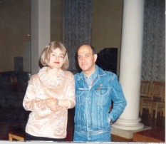
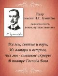

Виктория Доброжанская
Песни на стихи поэтов Серебряного века
|
Estimada amiga:
he oido las grabaciones de You Tube. Su musica, su voz, su "decir", transmiten una profusa, delicada y sugerente sensibilidad. Casi no hace falta entender los textos, como me sucede.
Un abrazo,
Jose Gimenez Corbaton
|
Уважаемая сеньора:
Я послушал ваши записи на You Tube. Ваша музыка, ваш голос, ваш "акцент" полны деликатной и чарующей чувственности. При этом, оказывается, не обязательно понимать текст, что, собственно, со мной и происходит.
С уважением,
Хосе Хименес Корбатон
|
В шумном платье муаровом
| 
| Автор музыки и вокал - Виктория Доброжанская
Аранжировки - заслуженный деятель искусств РФ Михаил Аптекман (Санкт-Петербург)
Инструментальный ансамбль:
Фортепиано, акустическая гитара, гармоника - Михаил Аптекман
Скрипка - Александр Ямпольский
Акустическая гитара - Александр Ретюнский
|
Жираф. (Стихи Н. Гумилёва)
Маэстро. (Стихи Н. Гумилёва)
В моих садах цветы. (Стихи Н. Гумилёва)
Зачем как шальные поют соловьи. (Стихи Г. Иванова)
Всегда таинственный. (Стихи А. Ахматовой)
Посредине панели. (Стихи Н. Заболоцкого)
Ананасы в шампанском. (Стихи И. Северянина)
Я любимого нигде не встретила. (Стихи А. Ахматовой)
Дамара. (Стихи Н. Гумилёва)
Пленник чужой. (Стихи А. Ахматовой)
Над розовым морем. (Стихи Г. Иванова)
Прощальный ужин. (Стихи А. Вертинского)
В шумном платье муаровом. (Стихи И. Северянина)
Шерри-бренди. (Стихи О. Мандельштама)
Исповедь незнакомки
Автор музыки и вокал - Виктория Доброжанская
гитара - Дмитрий Татаркин
Пленник чужой. (Стихи А.Ахматовой)
Маэстро. (Стихи Н.Гумилёва)
Ты всегда таинственный. (Стихи А.Ахматовой)
В шумном платье муаровом. (Стихи И.Северянина)
Ананасы в шампанском. (Стихи И.Северянина)
Посредине панели. (Стихи Н.Заболоцкого)
В моих садах цветы. (Стихи Н.Гумилёва)
Я любимого нигде не встретила. (Стихи А.Ахматовой)
Дамара. (Стихи Н.Гумилёва)
Жираф. (Стихи Н.Гумилёва)
Шерри-бренди. (Стихи О.Мандельштама)
Зачем . (Стихи Г.Иванова)
Это было у моря
Автор музыки и вокал - Виктория Доброжанская
гитара - Дмитрий Татаркин
Наше сердце. (Стихи М.Цветаевой)
Серенада. (Стихи А.Белого)
Колыбельная. (Стихи К.Кулиева)
Все вы, кто предали меня. (Стихи В.Доброжанской)
Вербы. (Стихи А.Блока)
И тополя уходят. (Стихи Ф.Гарсия Лорки)
Над безумием пьяной столицы. (Стихи Ф.Соллогуба)
Это было у моря. (Стихи И.Северянина. Музыкальный коллаж Е.Петербургского и Ф.Шопена)
А. Габов
АРИСТОКРАТКА
(посвящается Виктории)
Со здоровым азартом, с благородным азартом,
Благородная дерзость и чарующий нрав,
Села за фортепиано, не сыграв с нами в карты,
Не сыграв с нами в покер, выпив чаю из трав.
Села тихо и плавно, словно с розы слетела,
Словно с роз пропорхала мотыльком до окна,
Ножку к ножке приставив, заигравши улыбкой,
Заигравши глазами, посмотрев на меня.
Побежала по нотам, без причуд и без блажи,
Без манер или нравов, но уж точно любя.
Заигравши не Глинку и не Моцарта даже,
С благородным азартом и влюбляя в себя!
Марина Ольховская
ВИКТОРИИ
Вошла и сразила. С царицею схожа,
Но только лучистей, задорней, моложе.
И всё в изумлении будто застыло.
Она говорила... Она говорила...
Казалось, что бабочки рядом порхают,
А в белом снегу васильки расцветают.
И радуги вспышки повсюду, повсюду,
От голоса женщины - рыжего чуда!
И всякий, кто женщину эту узнает,
И сон, и покой навсегда потеряет.
Ты - женщина-вымпел! Ты - женщина-птица!
Ты лишь победителю можешь присниться.
Искришься, смеёшься, поёшь и танцуешь,
Сердцами играешь, манишь и чаруешь.
Бывает, грустишь ты, про это не скажешь.
И глаз глубины никому не покажешь.
Кого-то ты потчуешь не по заслугам,
А кто-то твоим притворяется другом.
Но ты влюблена и скрываешь то имя,
Ты непостижима. Ты полубогиня!
фрагмент из книги Виктории "Кристина. Преодоление боли"
Библионочь в Кисловодске (статьи о вечере 19 апреля 2013)
Виктория на youtube
сайт Виктории
написать Виктории: vic-tory07@mail.ru
Театр имени Н.С. Гумилёва
Театр им. Н.С. Гумилёва проводит литературно-музыкальные вечера, представляет оригинальные спектакли, организует встречи с интересными людьми из России и зарубежья, гостями и жителями города Кисловодска, возрождая традиции неформального общения творческой интеллегенции. На каждом вечере приветствуется импровизация в любом жанре, так как сам вечер состоит из двух частей: 1 часть - заявленная тема, 2 часть - творческое общение, фрагмент одной из таких встреч можно посмотреть на you tube: victoria0787.
Н.С. Гумилёв не только великий поэт, но истинный патриот России, отдавший жизнь за её духовные ценности. Поэт, бесстрашный воин, неутомимый путешественник, настоящий рыцарь Слова:
"В онный день, когда над миром новым,
Бог склонял лицо своё, тогда
Солнце останавливали словом,
Словом разрушали города.'
Поэзия Гумилёва не устарела, она учит мужеству и доброте, а ещё она необыкновенно красива. Читайте Гумилёва и Вы станете счастливее.
Автор проекта - Виктория Доброжанская - сценарист, автор и исполнитель (три авторских диска).

Елизавета Черепахина. Оазис красоты и очарования (о театре им. Н.С. Гумилёва)
Андрей КЛЕНИН, Анастасия САПОНОВА. Пять вечеров ("Кисловодская газета", 15 января 2014 )
Екатерина Копосова. Сотворчество ума и вдохновенья ("Кисловодская газета", 26 февраля 2014)
сайт театра им. Гумилева
Главная страница сайта
Страницы наших друзей
Последнее изменение страницы 12 Aug 2018
ПОДЕЛИТЬСЯ:
{kind=link}
{kind=link}
{kind=link}